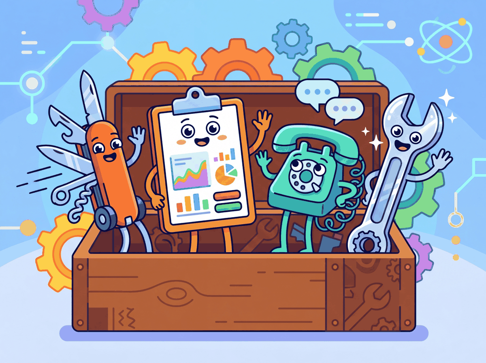

A beautiful interface for a broken model is still a broken product. But a working model behind an ugly interface will never find its users.
Deploy, UX-Pragmatic AI Agent
The best LLM backend is useless without a good frontend. Python-native frameworks like Gradio and Streamlit let ML engineers build demos and internal tools in minutes without any JavaScript. Chainlit provides a purpose-built conversational interface with features like step-by-step reasoning display and file uploads. For production-grade consumer applications, the Vercel AI SDK offers React/Next.js components with built-in streaming support. Building on the API deployment layer from Section 45.1, this section covers when to use each framework and provides working examples for each.
Prerequisites
Before starting, make sure you are familiar with production overview as covered in Section 45.1: Application Architecture and Deployment.
65.6.1 Framework Comparison
Your FastAPI endpoint returns perfect JSON, your model generates excellent responses, and your evaluation scores look great. Then you share the URL with a stakeholder, and they ask: "Where do I type my question?" You built the engine but forgot the steering wheel. The API patterns from Section 13.1 handle the backend communication, but the user still needs a visual interface. The frontend is where users actually experience your LLM, and choosing the wrong framework can mean the difference between a demo you build in an afternoon and a six-week detour through JavaScript tooling you never wanted to learn.
Gradio's gr.ChatInterface can turn a three-line Python function into a fully functional chatbot demo in under 60 seconds. This is both its greatest strength and the reason half the demos on Hugging Face Spaces look suspiciously identical.
By the end of this section, you will know when to reach for Gradio (quick ML demos), Streamlit (data apps), Chainlit (conversational agents), or the Vercel AI SDK (production consumer apps), and you will have working code for each. As illustrates, each framework is a specialized tool for a particular job. We start with a side-by-side comparison, then build progressively more sophisticated interfaces. The streaming concepts here build on the KV cache mechanics, which determine how quickly tokens arrive at the frontend. If you are building agent interfaces, the tool use patterns from Section 26.6 will inform how you display intermediate reasoning steps.

| Framework | Language | Streaming | Auth | Best For |
|---|---|---|---|---|
| Gradio | Python | Yes (built-in) | Basic / OAuth | ML demos, HuggingFace Spaces |
| Streamlit | Python | Yes (st.write_stream) | Community / Enterprise | Data apps, dashboards |
| Chainlit | Python | Yes (native) | OAuth / custom | Conversational AI, agent UIs |
| Open WebUI | Python/JS | Yes | Built-in multi-user | Self-hosted ChatGPT alternative |
| Vercel AI SDK | TypeScript | Yes (useChat hook) | Next.js auth | Production consumer apps |
The diagram below illustrates three common architecture patterns, ranging from a Python monolith for rapid prototyping to a fully decoupled stack for consumer-facing products.
Choosing an LLM frontend framework is like choosing a vehicle for a road trip. Gradio is a golf cart: gets you around a parking lot (demos) fast, but you would not take it on the highway. Streamlit is a sedan: comfortable for most journeys (data apps) but not built for racing. Chainlit is a purpose-built van for conversational AI. The Vercel AI SDK is a custom sports car that requires knowing how to drive stick (TypeScript). The key is matching the vehicle to the road, not picking the fanciest option.
The "Swiss cheese model" of safety applies perfectly to LLM systems: no single safety layer is foolproof, but stacking multiple imperfect layers (input filtering, system prompts, output classification, human review) creates a system where failures must align across all layers to reach the user. Each layer catches what the others miss.
The first chatbot UI, ELIZA (1966), used a teletype terminal and fooled some users into thinking they were talking to a real therapist. Sixty years later, billion-parameter models still ship behind a simple text box. The chat interface has barely changed; the intelligence behind it has changed by roughly ten orders of magnitude.
One pattern worth noting: many teams start with Gradio for internal prototyping and then face a difficult decision when the project graduates to production. Rewriting in a production framework (React, Next.js) takes weeks. Keeping the Gradio prototype as the production UI introduces performance and customization limitations. The teams that plan for this transition from the start (by keeping the backend API clean and framework-agnostic, as discussed in Section 45.1) save significant engineering time.
65.6.2 Gradio Chat Interface
This snippet builds an interactive chat interface using Gradio's ChatInterface component.
# implement chat
import gradio as gr
from openai import OpenAI
client = OpenAI()
def chat(message, history):
"""Gradio chat handler with streaming."""
messages = [{"role": "system", "content": "You are a helpful assistant."}]
for user_msg, bot_msg in history:
messages.append({"role": "user", "content": user_msg})
messages.append({"role": "assistant", "content": bot_msg})
messages.append({"role": "user", "content": message})
stream = client.chat.completions.create(
model="gpt-4o-mini", messages=messages, stream=True
)
partial = ""
for chunk in stream:
delta = chunk.choices[0].delta.content or ""
partial += delta
yield partial
demo = gr.ChatInterface(
fn=chat,
title="LLM Chat Demo",
description="Streaming chat powered by GPT-4o-mini",
examples=["Explain RAG in simple terms", "Write a haiku about ML"],
)
demo.launch(share=True)gr.ChatInterface wrapper handles conversation history management, streaming display, and example prompt buttons automatically. Setting share=True generates a public URL for instant sharing without any deployment infrastructure.65.6.3 Streamlit Chat Application
# Streamlit dashboard setup
import streamlit as st
from openai import OpenAI
st.title("Streamlit LLM Chat")
client = OpenAI()
# Initialize chat history in session state
if "messages" not in st.session_state:
st.session_state.messages = []
# Display existing messages
for msg in st.session_state.messages:
with st.chat_message(msg["role"]):
st.markdown(msg["content"])
# Handle new input
if prompt := st.chat_input("Ask anything..."):
st.session_state.messages.append({"role": "user", "content": prompt})
with st.chat_message("user"):
st.markdown(prompt)
with st.chat_message("assistant"):
stream = client.chat.completions.create(
model="gpt-4o-mini",
messages=st.session_state.messages,
stream=True,
)
response = st.write_stream(
chunk.choices[0].delta.content or ""
for chunk in stream
)
st.session_state.messages.append({"role": "assistant", "content": response})st.session_state initialization for chat history, which is necessary because Streamlit reruns the entire script on every user interaction. The sidebar sliders let users adjust model parameters in real time without code changes.65.6.4 Chainlit for Conversational AI
This snippet sets up a Chainlit application for building a conversational AI interface with message streaming.
# Implementation example
import chainlit as cl
from openai import AsyncOpenAI
client = AsyncOpenAI()
@cl.on_chat_start
async def start():
cl.user_session.set("history", [])
await cl.Message(content="Hello! How can I help you today?").send()
@cl.on_message
async def on_message(message: cl.Message):
history = cl.user_session.get("history")
history.append({"role": "user", "content": message.content})
msg = cl.Message(content="")
await msg.send()
stream = await client.chat.completions.create(
model="gpt-4o-mini", messages=history, stream=True
)
full_response = ""
async for chunk in stream:
token = chunk.choices[0].delta.content or ""
full_response += token
await msg.stream_token(token)
await msg.update()
history.append({"role": "assistant", "content": full_response})
cl.user_session.set("history", history)@cl.on_message decorator that handles incoming messages and the cl.Message streaming pattern that displays tokens as they arrive. Chainlit manages session state automatically across conversation turns.Chainlit excels at displaying multi-step agent reasoning. Its @cl.step decorator lets you show intermediate tool calls, retrieval results, and thinking processes as collapsible steps in the chat UI, which is invaluable for debugging and user transparency.
65.6.5 Vercel AI SDK with Next.js
This snippet creates a Next.js API route that streams LLM responses using the Vercel AI SDK.
// app/api/chat/route.ts (Next.js API route)
import { openai } from "@ai-sdk/openai";
import { streamText } from "ai";
export async function POST(req: Request) {
const { messages } = await req.json();
const result = streamText({
model: openai("gpt-4o-mini"),
system: "You are a helpful assistant.",
messages,
});
return result.toDataStreamResponse();
}
// app/page.tsx (React component)
"use client";
import { useChat } from "@ai-sdk/react";
export default function Chat() {
const { messages, input, handleInputChange, handleSubmit } = useChat();
return (
<div>
{messages.map((m) => (
<div key={m.id}>{m.role}: {m.content}</div>
))}
<form onSubmit={handleSubmit}>
<input value={input} onChange={handleInputChange} />
</form>
</div>
);
}useChat hook. Notice that the hook manages all state (messages, input, submission) and handles streaming responses automatically. This is the production-grade approach for consumer-facing chat interfaces, offering full control over styling while the SDK handles the protocol complexity.Start your first internal demo with Gradio, not a custom React frontend. Gradio generates an instant shareable link (share=True) that lets stakeholders try the model from their browser with zero deployment. Once you have validated the use case and gathered feedback, invest in a production frontend. Many teams waste weeks building polished UIs for prototypes that get pivoted after the first user test.
For teams that prefer self-hosting, Open WebUI provides a complete multi-user interface, as shown in Figure 65.6.5.
Streamlit reruns the entire script on every interaction. For LLM applications, this means you must store chat history in st.session_state and guard expensive operations (model loading, API client initialization) with caching decorators like @st.cache_resource. Failing to do so causes repeated model loads and lost conversation context.
Choose your frontend framework based on your audience. Gradio and Streamlit are optimal for internal tools, demos, and ML team workflows. Chainlit is the best choice for agent-heavy applications where you need to show reasoning steps. For external, consumer-facing products with custom branding and complex UX, use the Vercel AI SDK with Next.js to get full control over the interface.
1. What is the main advantage of Gradio's ChatInterface over building a custom chat UI?
Show Answer
2. Why must chat history be stored in st.session_state in Streamlit?
Show Answer
3. What does Chainlit's @cl.step decorator provide that other frameworks lack?
Show Answer
4. How does the Vercel AI SDK's useChat hook simplify streaming chat implementation?
Show Answer
5. When would you choose Open WebUI over building a custom frontend?
Show Answer
Who: A platform engineering team at a 500-person enterprise
Situation: The team needed a chat interface for an internal RAG-based knowledge assistant that searched company documentation and Confluence pages.
Problem: They initially built a custom React frontend, but maintaining WebSocket connections, streaming UI, and file upload handling consumed 40% of the sprint budget.
Dilemma: A custom frontend offered full branding control, but the team lacked dedicated frontend engineers. Switching to a pre-built framework meant accepting constraints on visual design.
Decision: They replaced the custom frontend with Chainlit, chosen specifically for its native agent step visualization and document upload support.
How: Migration took five days. They used Chainlit's @cl.step decorator to display retrieval sources and reasoning steps, and its built-in file handling for document ingestion.
Result: Frontend maintenance dropped to near zero. User adoption increased 35% because the step visualization built trust by showing which documents the answer came from.
Lesson: For internal tools, pre-built chat frameworks (Gradio, Chainlit, Streamlit) deliver more value per engineering hour than custom React builds unless consumer-grade branding is required.
If your LLM pipeline calls external services (search APIs, databases), wrap each call in a circuit breaker. After N consecutive failures, stop calling the failing service and fall back to a cached or degraded response. This prevents cascade failures.
- Gradio's ChatInterface provides the fastest path from model to shareable demo with built-in streaming, history, and public URLs.
- Streamlit requires explicit session state management due to its rerun-on-interaction execution model, but excels at data-rich dashboards.
- Chainlit is purpose-built for conversational AI with native support for agent step visualization, file uploads, and multi-turn reasoning display.
- Open WebUI offers a complete self-hosted ChatGPT alternative with multi-user support, RAG, and compatibility with Ollama and OpenAI APIs.
- The Vercel AI SDK provides production-grade React hooks for streaming chat that integrate seamlessly with Next.js API routes and server components.
- Match your framework to your audience: Python frameworks for internal tools, Next.js for consumer products.
A beautiful frontend is worthless if it crumbles under load. Section 45.3 addresses the scaling, performance optimization, and safety guardrails that keep production LLM systems reliable.
Open Questions:
- How should streaming UI patterns evolve to handle multi-step agent workflows where the output is not a single text stream but a sequence of actions and results?
- What accessibility standards should apply to AI-generated content in user interfaces? Current WCAG guidelines do not specifically address LLM output rendering.
Recent Developments (2024-2025):
- The Vercel AI SDK and similar frontend toolkits (2024-2025) standardized patterns for streaming LLM responses, structured output rendering, and generative UI components, reducing frontend development effort significantly.
Explore Further: Build a chat interface with streaming support using the Vercel AI SDK or a similar toolkit. Add a feature that renders structured LLM output (like code blocks or tables) differently from plain text, and gather user feedback.
Exercises
Compare Gradio, Streamlit, and Chainlit for building an LLM chatbot interface. For each, state its primary strength and the scenario where it is the best choice.
Answer Sketch
Gradio: fastest to prototype, one-line chat interface, best for ML demos and Hugging Face Spaces. Streamlit: most flexible layout, good for dashboards that combine chat with data visualization. Chainlit: purpose-built for conversational AI, supports step-by-step reasoning display, file uploads, and multi-turn conversations out of the box. Choose Gradio for quick demos, Streamlit for internal tools with mixed content, and Chainlit for production-grade chat applications.
Write a Gradio chatbot that streams responses from an LLM API. The interface should display tokens as they arrive and show a typing indicator while generating. Include error handling for API failures.
Answer Sketch
Use gr.ChatInterface with a generator function that yields partial responses. The function calls the LLM API with stream=True, accumulates tokens, and yields the growing string at each step. For error handling, wrap the API call in try/except and yield an error message if the call fails. Gradio handles the typing indicator automatically when using a generator function. Set type="messages" for the modern message format.
Explain when you would choose the Vercel AI SDK over Python-native frameworks like Gradio or Streamlit. What features does it provide that Python frameworks lack?
Answer Sketch
Choose Vercel AI SDK when building consumer-facing applications that need: (1) polished React/Next.js UI with custom design, (2) edge deployment for global low latency, (3) built-in streaming with React hooks (useChat, useCompletion), (4) integration with the broader JavaScript ecosystem. Python frameworks lack: production-grade frontend customization, edge deployment, and the ability to build complex multi-page applications. The tradeoff is that Vercel AI SDK requires JavaScript/TypeScript expertise.
List five UX patterns specific to LLM-powered interfaces (e.g., streaming output, confidence indicators, suggested follow-ups). For each, explain the user need it addresses and how to implement it.
Answer Sketch
(1) Streaming output: reduces perceived latency; implement with SSE or WebSocket. (2) Source citations: builds trust; display retrieved document snippets as expandable references. (3) Suggested follow-ups: reduces user effort; generate 2-3 follow-up questions from the response. (4) Regenerate button: handles non-determinism; re-send the same prompt with a new seed. (5) Feedback buttons (thumbs up/down): captures quality signal; log the feedback with the trace ID for evaluation. Each pattern addresses a unique challenge of probabilistic, slow, and sometimes incorrect outputs.
How should LLM chat interfaces handle accessibility? Discuss challenges specific to streaming text, dynamic content updates, and screen reader compatibility. Propose solutions for each.
Answer Sketch
Challenges: (1) Streaming text creates constant DOM updates that overwhelm screen readers. Solution: use ARIA live regions with "polite" mode and batch updates. (2) Dynamic content (expanding citations, loading indicators) is invisible to assistive technology. Solution: use proper ARIA roles and announcements. (3) Chat interfaces rely heavily on visual layout. Solution: ensure keyboard navigation, provide text alternatives for all visual elements, and test with screen readers. (4) Long responses are hard to navigate. Solution: provide heading structure within responses and skip-to-content links.
What Comes Next
In the next section, Section 45.3: Scaling, Performance & Production Guardrails, we cover scaling, performance, and production guardrails that keep LLM applications reliable under real-world load.